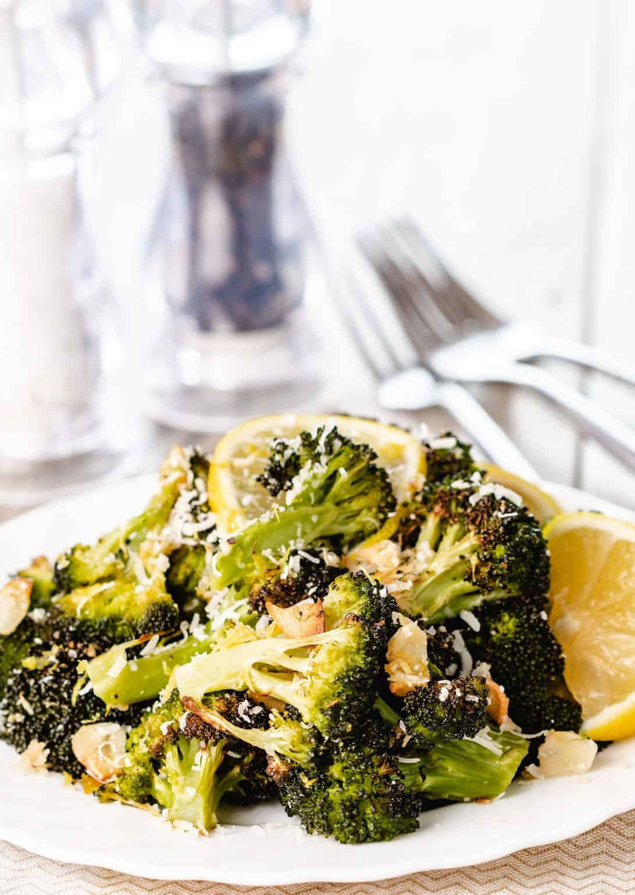

Home
The Best Broccoli of Your Life

Description
Roasted Fresh Broccoli with garlic, lemon, and Parmesan Cheese, this side dish recipe is sure to be the Best Broccoli of Your Life!
Ingredients
- 0.67 pounds broccoli
- 0.67 garlic cloves
- Good olive oil
- 0.25 teaspoons kosher salt
- 0.08 teaspoon freshly ground black pepper
- 0.33 teaspoons grated lemon zest
- 0.33 tablespoons freshly squeezed lemon juice
- 0.06 cup freshly grated Parmesan cheese
Steps
- Preheat the oven to 400°F/200°C.
- Cut the broccoli florets from the thick stalks, leaving an inch or two of stalk attached to the florets, discarding the rest of the stalks. Cut the larger pieces through the base of the head with a small knife, pulling the florets apart. You should have about 8 cups of florets.
- Place the broccoli florets on a sheet pan large enough to hold them in a single layer. Toss the garlic on the broccoli and drizzle with 5 tablespoons olive oil. Sprinkle with the salt and pepper.
- Roast for 20 to 25 minutes, until crisp-tender and the tips of some of the florets are browned.
- Remove the broccoli from the oven and immediately toss with 1½ tablespoons olive oil, the lemon zest, lemon juice, and Parmesan. Serve hot.